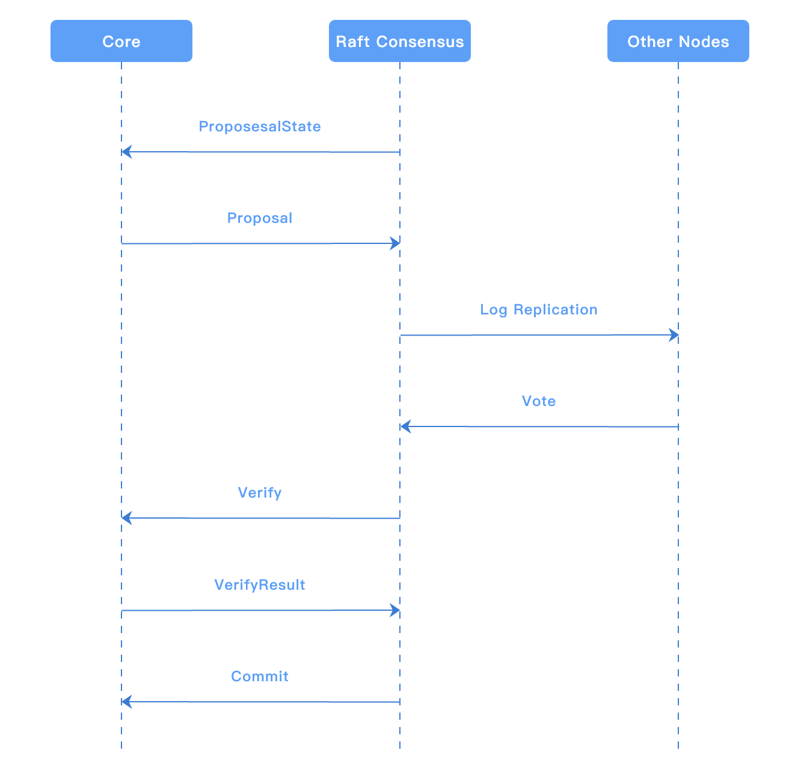
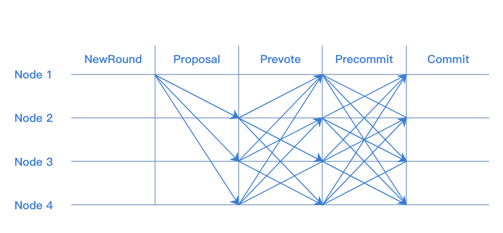
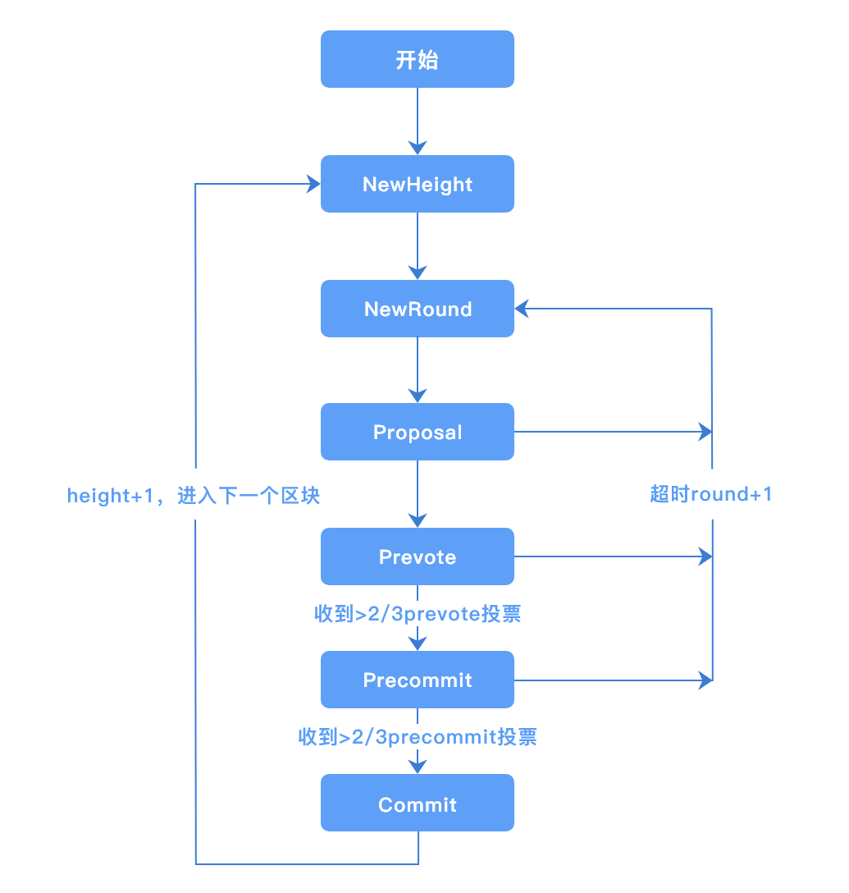

5. 共识算法¶
5.1. 共识算法简介¶
共识算法是指在分布式场景中，多个节点为了达成相同的数据状态而运行的一种分布式算法。 在分布式场景中，可能出现网络丢包、时钟漂移、节点宕机、节点作恶等等故障情况，共识算法需要能够容忍这些错误，保证多个节点取得相同的数据状态。
根据可容忍的故障类型的不同，可以将共识算法分为两类：
容忍宕机错误类算法（crash fault tolerant consensus algorithm），可以容忍网络丢包、时钟漂移、部分节点宕机这种节点为良性的错误。常见算法有 Paxos、Raft。
容忍拜占庭错误类算法（byzantine fault tolerant consensus algorithm），可以容忍部分节点任意类型错误，包括节点作恶的情况。常见算法有 PBFT、PoW、PoS等。
根据使用场景的不同，又可将共识算法分为公链共识、联盟链共识两类。
5.1.1. 公链共识¶
公链的特点是节点数量多且节点分布分散，主要使用的共识算法有PoW和PoS，这两种共识的优点是可以支持的节点数量多，缺点是TPS较低和交易确认时间长。
5.1.2. 联盟链共识¶
联盟链的特点是节点之间网络较为稳定且节点有准入要求，根据需要容忍的错误类型可以选择Raft和PBFT类算法，这类算法的优点是TPS较高且交易可以在毫秒级确认，缺点是支持的节点数量有限，通常不多于100个节点。
5.1.3. 公链共识和联盟链共识的对比¶
| 共识 | 支持的节点数量 | TPS | 交易时延 |
|---|---|---|---|
| 公有链共识 | 10000+ | 10+ | 10min+ |
| 联盟链共识 | 100+ | 1000+ | 1s+ |
5.2. 长安链中的共识¶
长安链1.0开源版本目前支持Solo，Raft，TBFT 三种共识类型。三种共识对比如下：
| 共识类型 | 故障节点数为n(n>=0)时，网络中最少节点数 | 使用场景 |
|---|---|---|
| Solo | Solo只支持1个节点 | 主要用于测试及搭建demo |
| Raft | 2n+1 | 联盟链中不需要考虑恶意节点，且需要性能较高的场景 |
| TBFT | 3n+1 | 联盟链中需要考虑恶意节点的场景 |
| HotStuff | 3n+1 | 联盟链中需要考虑恶意节点的场景 |
5.2.1. Solo¶
5.2.1.1. 算法简介¶
SOLO是单节点无共识投票过程的“共识算法”。
5.2.1.2. 算法用途¶
快速部署单节点运行，降低试用门槛；
供开发人员进行除网络和共识模块的全流程测试。
5.2.1.3. 如何使用算法¶
部署一个长安链节点，将链配置的共识算法进行如下修改，清除数据启动即可：
#共识配置
consensus:
# 共识类型(0-SOLO,1-TBFT,2-MBFT,3-HOTSTUFF,4-RAFT,10-POW)
type: 0
5.2.2. Raft¶
5.2.2.1. 算法简介¶
Raft算法是目前使用最广泛的非拜占庭容错类共识算法。 Raft算法主要依靠投票机制和日志复制机制来实现节点间的共识。节点通过投票选出一个leader，由leader负责处理所有请求，再将请求以日志的方式复制到其他节点。
5.2.2.2. 算法用途¶
不考虑恶意节点的多节点环境；
需要支持高TPS的环境。
5.2.2.3. 共识接口说明¶
Raft 实现了长安链的ConsensusEngine接口。 Start 方法用来初始化Raft内部状态及启动Raft实例。 Stop 方法用来停止Raft实例。
type ConsensusEngine interface {
// Init starts the consensus engine.
Start() error
// Stop stops the consensus engine.
Stop() error
}
5.2.2.4. Raft共识与核心引擎交互图¶
流程图如下：

5.2.2.5. 如何使用算法¶
Raft共识建议配置节点数为2n+1(n>=0)，将链配置（参见配置模块，链配置章节）的共识算法进行如下修改，清除数据启动即可：
#共识配置
consensus:
# 共识类型(0-SOLO,1-TBFT,2-MBFT,3-HOTSTUFF,4-RAFT,10-POW)
type: 4
nodes:
- org_id: "wx-org1.chainmaker.org"
node_id:
- "QmcQHCuAXaFkbcsPUj7e37hXXfZ9DdN7bozseo5oX4qiC4"
- org_id: "wx-org2.chainmaker.org"
node_id:
- "QmeyNRs2DwWjcHTpcVHoUSaDAAif4VQZ2wQDQAUNDP33gH"
- org_id: "wx-org3.chainmaker.org"
node_id:
- "QmXf6mnQDBR9aHauRmViKzSuZgpumkn7x6rNxw1oqqRr45"
5.2.3. TBFT¶
5.2.3.1. 算法简述¶
TBFT 是一种拜占庭容错的共识算法，可以在拜占庭节点数小于总数1/3的情况下，保证系统的安全运行。 TBFT 的每轮共识可以分为5个步骤：
NewRound: 共识投票的准备阶段，会初始化共识相关状态；
Proposal: 提案阶段，leader节点会打包区块，并广播给follwer节点；
Prevote: 预投票阶段，follower节点在收到proposal并验证proposal合法后，广播自己的prevote投票到其他节点；
Precommit: 预提交阶段，节点收到 >2/3 针对proposal的prevote投票后，广播自己的precommit投票到其他节点；
Commit: 提交阶段，节点收到 >2/3 针对proposal的precommit投票后，提交proposal中的区块到账本。
其中共识投票是指其中的Proposal，Prevote，Precommit三个阶段。 阶段图示如下：

流程图如下：

5.2.3.2. 与PBFT的区别¶
TBFT基于Tendermint算法，与PBFT的最大区别在于：PBFT有一个固定的leader节点打包交易，当leader节点故障的时候会 使用view-change子协议更换leader；而在TBFT中，leader是轮换的，每提交n个块（可以配置）leader会轮换成下一个节点。 因此，TBFT比PBFT有更好的公平性。
5.2.3.3. 与msgbus交互流程¶

ProposaState: TBFT发送给核心引擎本节点在当前高度是否是leader节点，核心引擎判断是否需要打包区块
Proposal: 核心引擎打包区块并发送给TBFT
Verify: 当本节点收到主节点发来的区块后，向核心引擎验证区块读写集等信息
VerifyResult: 核心引擎返回给TBFT Verify的结果，当区块合法时，本节点将会投票给区块
Commit: TBFT完成共识后，向核心引擎发送提交区块的信号，核心引擎提交区块到账本
BlockInfo: 核心引擎告知TBFT已提交区块的高度等信息，TBFT进入下一个高度
5.2.3.4. 接口说明¶
TBFT 实现了长安链的ConsensusEngine接口。
Start 方法用来初始化TBFT内部状态及启动TBFT实例。
Stop 方法用来停止TBFT实例。
type ConsensusEngine interface {
// Init starts the consensus engine.
Start() error
// Stop stops the consensus engine.
Stop() error
}
5.2.3.5. 数据结构¶
// TBFTMsgType defines different type message in tbft
enum TBFTMsgType {
propose = 0;
prevote = 1;
precommit = 2;
state = 3;
}
message TBFTMsg {
TBFTMsgType type = 1;
bytes msg = 2;
}
// Proposal defined a consesensus proposal which can
// be gossiped to other node and can be serilized
// for persistent store.
message Proposal {
string voter = 1;
int64 height = 2;
int32 round = 3;
int32 pol_round = 4;
Block block = 5;
EndorsementEntry endorsement = 6;
}
// VoteType represents the type of vote
enum VoteType {
VotePrevote = 0;
VotePrecommit = 1;
}
// Vote represents a tbft vote
message Vote {
VoteType type = 1;
string voter = 2;
int64 height = 3;
int32 round = 4;
bytes hash = 5;
EndorsementEntry endorsement = 6;
}
// Step represents the step in a round
enum Step {
NewHeight = 0;
NewRound = 1;
Propose = 2;
Prevote = 3;
PrevoteWait = 4;
Precommit = 5;
PrecommitWait = 6;
Commit = 7;
}
5.2.3.6. 配置参数¶
TBFT 可以通过在配置块中的ext_config字段配置相关参数：
“TBFT_propose_timeout”: 提案的超时时间，如
10s,1m；“TBFT_propose_delta_timeout”: 每轮提案超时增加的时间，如
10s,1m；“TBFT_blocks_per_proposer”: 每个节点连续出块数，如
3。
5.2.4. HotStuff¶
chainedbft模块实现了流水线hotstuff共识，是一种优化后的三阶段bft算法，在拜占庭节点数小于总数1/3时，保证系统的安全运行，同时提供更加高效的运行效率；在如下方面进行了优化：
优化投票流程，使用星型网络减少网络通信量至O(n)
简化共识消息类型为 proposalMsg、voteMsg
liveness和safty解耦，方便拓展实现
hotstuff是一种基于view的共识算法，每个view又称为level，每次进行level切换时，可以更新下一个level的proposer，且具有如下特性；
共识算法运转过程中，存在两个全局累加的变量：区块高度、共识level，指定高度的区块可能经历多轮共识才达成一致，当节点生成有效区块或当前共识level被投超时票后，共识level都会递增
流水线的hotstuff共识算法中，对当前共识level区块的投票会发送下一个共识level的proposer节点，由下一个level的proposer收集投票信息组成QC，包含在新生成的区块中
hotstuff共识算法为三阶段协议：prepareQC、precommitQC、commitQC
在流水线模式的实现中，当前区块的QC是由下一个view的leader节点收集，包含在下一个区块中；且由于每一阶段都是对指定消息的投票收集，因为对协议进行了如下优化
prepareQC：链上验证者集合对当前view提案的第一轮共识投票，包含在下一轮共识view+1的提案中，当节点收到view+1提案消息时，表示对view的第一轮共识达成
precommitQC/lockedQC：共识view的precommitQC是由view+1的prepareQC间接确认的，即当view+2的leader将验证者集合对view+1的共识投票包含在新提案中，其它节点收到view+2提案时，表示对view+1的prepareQC达成，对view的precommitQC达成
commitQC：与precommitQC的达成类似，view的commitQC是通过对view+2的prepareQC间接达成的；当节点收到view+3的提案时，表示链上验证集合对view的commitQC达成，此时会将view的提案在链上提交
因此流水线的hotstuff实现中，节点会缓存三个共识view(view、view+1、view+2)待提交的提案信息，直到收到view+3提案时，将view的提案进行提交
经过流水线hotstutff的共识优化，投票类型仅包含对于接收的proposal消息的投票或共识超时后的NewView消息投票
名字解释
QC(quorum certificate)：(n−f)个节点对指定proposal消息的签名投票集合。
TC(timeout quorum certificate)：(n−f)个节点对共识view的超时消息的签名投票集合。
5.2.4.1. 模块设计¶
共识模块主要由几个组件组成，分别是：状态机chainedbftSMR、安全服务SafetyRules、活性服务Pacemaker、信息同步syncManager、定时器服务TimerService，互相配合在ConsensusChainedBftImpl中实现了Hotstuff协议。
chainedbftSMR：用来管理节点的状态，保存节点的投票、QC信息等
SafetyRules：验证节点接收的proposal消息的有效性
Pacemaker：共识活性服务，使用接收到的QC/TC信息，推进节点的共识状态
syncManager：在共识过程中，如果负责落后节点的信息同步，将其更新至最新链上最新状态
TimerService: 定时器服务，当共识切换或生成区块时，添加定时任务，执行超时监测
ConsensusChainedBftImpl：将各个模块组合起来，实现流水线hotstuff共识
5.2.4.2. 配置参数¶
HOTSTUFF_round_timeout_milli：共识view切换的基础超时时间
HOTSTUFF_round_timeout_delta_milli：相同区块高度下，每次共识超时后增加的delta时间
HOTSTUFF_proposer_timeout_milli：proposer生成区块时基础的超时时间
HOTSTUFF_proposer_timeout_delta_milli：proposer生成区块时，每次超时后增加的delta时间